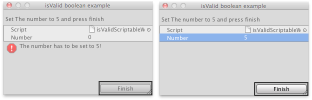

ScriptableWizard.isValid
public bool isValid;
Description 描述
Allows you to enable and disable the wizard create button, so that the user can not click it.
See Also: ScriptableWizard.OnWizardUpdate

The finish button gets disabled until the user sets the number to 5.
// Asks the user to set the var "Number" to 5, if is not set to 5 // the "Finish" button will not be reachable
using UnityEngine; using UnityEditor;
public class isValidScriptableWizard : ScriptableWizard { public int number = 0; [MenuItem("Example/Show isValid Usage")] static void CreateWindow() { ScriptableWizard.DisplayWizard( "isValid boolean example", typeof(isValidScriptableWizard), "Finish"); }
void OnWizardUpdate() { helpString = "Set The number to 5 and press finish"; if (number != 5) { errorString = "The number has to be set to 5!"; isValid = false; } else { errorString = ""; isValid = true; } } }